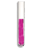

Sidebar menu
option des lecons
CHAPITRE 1 : GENERALITE
EXERCICES (Attention rassurez-vous de la bonne réponse avant de cocher)
Réponds par vrai ou faux en cochant la bonne réponse
a. Un homme blanc et une femme noire peuvent donner un enfant blanc
b. Un enfant peut ressembler à ses grands-parents
c. La forme du nez est un caractère héréditaire
Réponds par vrai ou faux en cochant la bonne réponse
d. Tous les êtres humains appartiennent à la même espèce
e. Une personne albinos va automatiquement avoir tous les enfants albinos
f. L'albinisme n'est pas un caractère héréditaire
Réponds par vrai ou faux en cochant la bonne réponse
g. Le mariage entre un noir et une personne métissée donne des enfants carterons
h. la science qui étudie l'hérédité s'appelle la génétique
i. le mariage interracial donne naissance aux métissées
j. la forme de la bouche n'est pas un caractère héréditaire
note : 20
Un arbre généalogique : Cliquez sur un des petit-fils pour observer.

CURIE
Couleur de yeux : elle hérite des yeux de son père Roger
Forme de la bouche : elle l'hérite de sa mère Agnes qui l'hérite de son père Maximilien.
elle hérite de son père Roger.
Forme du menton : elle hérite de son père Roger.
Forme des oreilles : elle les hérite de son père Roger
Couleur de la peau : elle hérite de sa mère Karine qui elle hérite de son père Bernard
Forme du visage : un mélange de son père et de sa mère
MAX
Couleur de yeux : Il hérite des yeux de sa mère Agnès qui l'hérite de son père Maxilimien.
Forme de la bouche : Il l'hérite de son père Roger.
Forme du nez : Il hérite de son père Roger.
Forme du menton : Il hérite de sa mère Agnès qui l'hérite de sa mère Bernadette.
Forme des oreilles : Il les hérite de son père Roger
Forme du visage : Il hérite de la forme du visage de sa mère Agnes qui elle l'hérite de sa mère Bernadette
RICE
Couleur de yeux : Elle hérite des yeux de son père Roger.
Forme de la bouche : elle l'hérite de sa mère Agnes qui l'hérite de son père Maximilien.
Forme du nez : Elle l'hérite de son père Roger.
Forme du menton : Elle hérite de sa mère Agnès qui l'hérite de sa mère Bernadette.
Forme des oreilles : Elle les hérite de son père Roger
Forme du visage : Elle hérite de la forme du visage de sa mère Agnes qui elle l'hérite de sa mère Bernadette
BARACK
Couleur de yeux : Il hérite des yeux de sa mère Agnès qui l'hérite de son père Maxilimien.
Forme de la bouche : Il l'hérite de sa mère Agnes qui l'hérite de son père Maximilien.
Forme du nez : Il hérite de son père Roger.
Forme du menton : Il hérite de sa mère Agnès qui l'hérite de sa mère Bernatte.
Forme des oreilles : Il les hérite de son père Roger
Forme du visage : Il hérite de la forme du visage de sa mère Agnes qui elle l'hérite de sa mère Bernadette
SHEFIRA
Couleur de yeux : Il hérite des yeux de sa mère Agnès qui l'hérite de son père Maxilimien.
Forme de la bouche : Elle l'hérite de sa mère Sidonie.
Forme du nez : Il hérite de son père Michel qui a hérité de son père Max.
Forme du menton : Il hérite de sa mère Sidonie.
Forme des oreilles : Il les hérite de sa mère Siodnie
Forme du visage : Il hérite de la forme du visage de sa mère
LECON 2 : TRANSMITION DE L'INFORMATION GENETIQUE
EXERCICES (Attention rassurez-vous de la bonne réponse avant de cocher)
Parmi les affirmations suivantes, relève celles qui sont exactes.
1. Le caryotype d'une cellule male est différent de celui d'une cellule femelle au niveau de
2. Un individu souffrant du syndrome de trisomie 21 possède
3. Un individu atteint du syndrome de down est de sexe :
4. Un individu atteint du syndrome de kleinefelter est de sexe :
5. Un individu atteint du syndrome de klinefelter possède dans son caryotype
6. Pour arrêter la division cellulaire on utilise comme colorant :
7. Les chromosomes :
8. Dans l'espèce humaine, le caryotype comporte :
Réponds par vrai ou faux en cochant la bonne réponse
a. La colchicine est un colorant utilise pour éclater la cellule
b. Pour réaliser un caryotype en laboratoire, on n'utilise pas le tube a essaie ;
c. Dans le tube a essaie, on place la colchicine avant le sang ;
Réponds par vrai ou faux en cochant la bonne réponse
d. Pour réaliser un caryotype en laboratoire, le port des gangs est obligatoire ;
e. En laboratoire, on peut observer le caryotype sans microscope
f. Le microscope électronique avec appareil photo est indispensable pour la réalisation du caryotype ;
Réponds par vrai ou faux en cochant la bonne réponse
g. La réunion au hasard d'un spermatozoïde et d'un ovule produit autant d'oeufs possédant XY que d'oeufs possédant XX ;
h. Dans l'espèce humaine, le nombre de chromosome varie selon le gène des individus ;
i. La trisomie 21 est caractérisée par 21 paires de chromosomes au lieu de 23 ;
Réponds par vrai ou faux en cochant la bonne réponse
j. Le sexe d'un enfant est déterminé par un ovule ;
k. Au cours de la division cellulaire, les chromosomes apparaissent constitués de deux chromatides ;
l. La fécondation rétablit le nombre de chromosome caractéristique de l'espèce ;
note : 20
Etapes de réalisation d'un caryotype.
Etape 1 : Culture des cellules
Tout d'abord rassurez-vous que vous portez une blouse.
→ A l'aide de l'outil pipette prenez une goutte de sang  → Deposer dans le tube à essai
→ Deposer dans le tube à essai  le sang contenu dans la pipette
le sang contenu dans la pipette
Etape 2 : Obtenir des métaphases
→ Deposer dans le tube à essai le sang contenu dans la pipette
→A l'aide de l'outil pipette prenez une goutte de Colchicine  → Ajouter dans le tube à essai
→ Ajouter dans le tube à essai  la colchicine contenue dans la pipette. (Ceci a pour effet de bloquer la division cellulaire au stade de métaphase)
→A l'aide de l'outil pipette prenez une goutte de Cristale violet
la colchicine contenue dans la pipette. (Ceci a pour effet de bloquer la division cellulaire au stade de métaphase)
→A l'aide de l'outil pipette prenez une goutte de Cristale violet  → Ajouter dans le tube à essai
→ Ajouter dans le tube à essai  le critale violet contenu dans la pipette (pour la coloration des chromosomes)
le critale violet contenu dans la pipette (pour la coloration des chromosomes)
Etape 3 : Identification des chromosomes
→ Ajouter dans le tube à essai la colchicine contenue dans la pipette. (Ceci a pour effet de bloquer la division cellulaire au stade de métaphase)
→A l'aide de l'outil pipette prenez une goutte de Cristale violet
→ Ajouter dans le tube à essai le critale violet contenu dans la pipette (pour la coloration des chromosomes)
→A l'aide de l'outil pipette prenez une goutte du mélange contenu dans le tube à essai 
→ Déposer ce melange sur la lame  →Déposer la lame sur le microscope optique puis filmer le résultat
→Déposer la lame sur le microscope optique puis filmer le résultat  → Ajouter dans le tube à essai le critale violet contenu dans la pipette (pour la coloration des chromosomes)
→ Ajouter dans le tube à essai le critale violet contenu dans la pipette (pour la coloration des chromosomes)
Etape 4 : Classification des chromosomes
→Déposer la lame sur le microscope optique puis filmer le résultat
→ Ajouter dans le tube à essai le critale violet contenu dans la pipette (pour la coloration des chromosomes)
→ Dans l'image obtenue, vous observez des chromosomes éparpillés. Sélectionnez-les un à un pour les ranger par paire homologue dans le tableau de caryotype
→ Si le principe est acquis, vous pouvez ranger automatiquement en cliquant sur le bouton "Ranger".
Etape 5 : Identification du caryotype
→ Parmis les types de caryotypes proposés cochez celui qui correspond à cette cellule
LECON 3 : LA NATURE DE L'INFORMATION GENETIQUE
EXERCICES (Attention rassurez-vous de la bonne réponse avant de cocher)
Parmi les affirmations suivantes, relève celles qui sont exactes.
1. Les gènes sontParmi les affirmations suivantes, relève celles qui sont exactes.
2. Parmi les groupes sanguins suivant existe le donneur universel : c'est le groupeParmi les affirmations suivantes, relève celles qui sont exactes.
3. Parmi les groupes sanguins quel est celui qui agglutine avec le sérum anti AParmi les affirmations suivantes, relève celles qui sont exactes.
4. Parmi les groupes sanguins quel est celui qui agglutine en présence du sérum anti BParmi les affirmations suivantes, relève celles qui sont exactes.
5. La paire de chromosomes portant le gène responsable du groupe sanguin est :Réponds par vrai ou faux en cochant la bonne réponse
a. Le groupe sanguin O agglutine en présence du sérum anti AB
b. Le groupe AB est le receveur universel
c. Le groupe AB n'agglutine pas en présence du sérum anti AB
Réponds par vrai ou faux en cochant la bonne réponse
d. Dans une cellule les allèles d'un gène peuvent être identiques ou différents
e. Le gène est une portion de chromosome
f. Un papa de groupe AB peut avoir un enfant de groupe A
Réponds par vrai ou faux en cochant la bonne réponse
g. Une maman de groupe O peut avoir un enfant de groupe AB
h. Le sérum anti A n'agglutine pas du tout le groupe AB
i. L'agglutination est caractérisée par la destruction des hématies
j. L'agglutination est caractérisée par la destruction des antis corps
note : 30
Etapes de détermination de groupe sanguin.
Etape 1 : Prélever du sang sang
Tout d'abord rassurez-vous que vous portez une blouse.
→ A l'aide de l'outil pipette prenez du sang que vous déposerez sur chacune des lames
Etape 2 : Ajouter des serums
que vous déposerez sur chacune des lames
→ A l'aide de l'outil pipette prenez une goutte de serum anti-A et déposer sur une lame
→ Prenez une goutte de serum anti-B et déposer sur une autre lame
→ Prenez une goutte de serum anti-AB et déposer sur une lame differente des autres
→ Enfin déposer une goute de serum anti-D ou anti-Rhésus su la dernière lame
Etape 2 : Observer l'agglutination
→ Observer les lames et noter celles sur lesquelles il y a agglutination.
Etape 2 : Analyser et conclure
→ S'il y a agglutination sur la lame contenant le serum anti-D alors le rhésus est positif. Sinon le rhésus est négatif
→ S'il y a agglutination en AB et en A il sagit du groupe sangin A
→ S'il y a agglutination en AB et en B il sagit du groupe sangin B
→ S'il y a agglutination en AB en B et en A il sagit du groupe sangin AB
→ S'il n'y a agglutination ni en AB, ni en B, ni en A il sagit du groupe sangin O
LECON 4 : L'EXPRESSION DE L'INFORMATION GENETIQUE
EXERCICES (Attention rassurez-vous de la bonne réponse avant de cocher)
Réponds par vrai ou faux en cochant la bonne réponse
a. Les cellules de la peau et les cellules du pancréas sont différentes
b. La couleur des cheveux est un caractère héréditaire
c. Un homme AA et une femme AS ont la possibilité de faire un enfant drépanocytaire
Réponds par vrai ou faux en cochant la bonne réponse
d. Un homme AS et une femme AS ont la possibilité de faire un enfant drépanocytaire
e. le mariage entre une femme AS et un homme AS n'est pas encouragé
f. le mariage entre une femme AS et un homme AA n'est pas encouragé
Réponds par vrai ou faux en cochant la bonne réponse
g. la probabilité pour un homme AA et une femme AA de faire des enfants AS est nulle
h. les examens prénuptiaux ne sont pas importants
Exercice 2
1. Soit un couple où:
- la femme possède en double exemplaire l'allèle dirigeant la synthèse d'une hémoglobine normale noté A.
- l'homme possède l'allèle normal et l'allèle dirigeant la synthèse d'une hémoglobine anormale S
- la femme possède en double exemplaire l'allèle dirigeant la synthèse d'une hémoglobine normale noté A.
- l'homme possède l'allèle normal et l'allèle dirigeant la synthèse d'une hémoglobine anormale S
2. un couple non drépanocytaire qui a déjà un enfant atteint
de la drépanocytose attend un autre enfant. Quelle est la probabilité
pour que ce dernier soit victime de cette maladie héréditaire
note : 20
PREFERENCE DES MENUS
ldkldkfjldkjf ksjdhksjdhkjsd
skjhksjdfsdkjf
2016 https://dipes2ens.wordpress.com